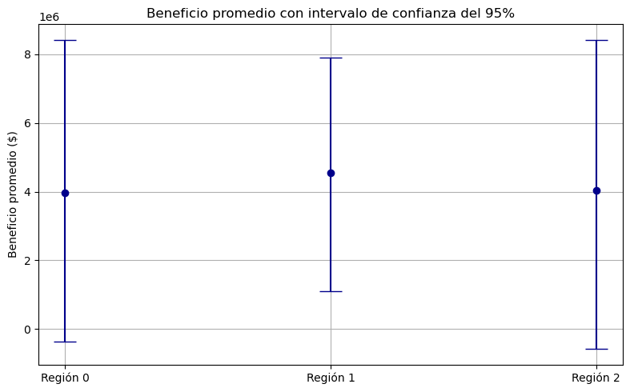
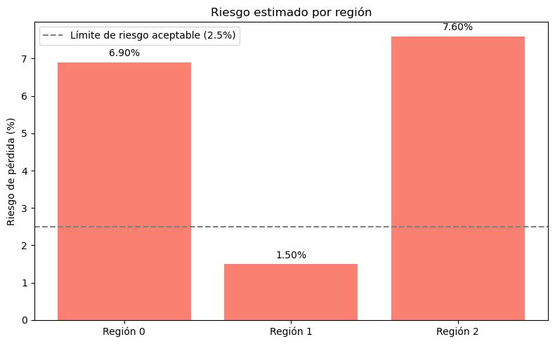

Proyecto OilyGiant - Extracción de petróleo#
# Importar librerias
import pandas as pd
import numpy as np
from matplotlib import pyplot as plt
from sklearn.model_selection import train_test_split
from sklearn.metrics import root_mean_squared_error
from sklearn.linear_model import LinearRegression
# Cargar los datos
data0 = pd.read_csv('datasets/geo_data_0.csv')
data1 = pd.read_csv('datasets/geo_data_1.csv')
data2 = pd.read_csv('datasets/geo_data_2.csv')
# Analizar datos del primer conjunto
data0.info()
data0.head()
<class 'pandas.core.frame.DataFrame'>
RangeIndex: 100000 entries, 0 to 99999
Data columns (total 5 columns):
# Column Non-Null Count Dtype
--- ------ -------------- -----
0 id 100000 non-null object
1 f0 100000 non-null float64
2 f1 100000 non-null float64
3 f2 100000 non-null float64
4 product 100000 non-null float64
dtypes: float64(4), object(1)
memory usage: 3.8+ MB
| id | f0 | f1 | f2 | product | |
|---|---|---|---|---|---|
| 0 | txEyH | 0.705745 | -0.497823 | 1.221170 | 105.280062 |
| 1 | 2acmU | 1.334711 | -0.340164 | 4.365080 | 73.037750 |
| 2 | 409Wp | 1.022732 | 0.151990 | 1.419926 | 85.265647 |
| 3 | iJLyR | -0.032172 | 0.139033 | 2.978566 | 168.620776 |
| 4 | Xdl7t | 1.988431 | 0.155413 | 4.751769 | 154.036647 |
# Analizar datos del segundo conjunto
data1.info()
data1.head()
<class 'pandas.core.frame.DataFrame'>
RangeIndex: 100000 entries, 0 to 99999
Data columns (total 5 columns):
# Column Non-Null Count Dtype
--- ------ -------------- -----
0 id 100000 non-null object
1 f0 100000 non-null float64
2 f1 100000 non-null float64
3 f2 100000 non-null float64
4 product 100000 non-null float64
dtypes: float64(4), object(1)
memory usage: 3.8+ MB
| id | f0 | f1 | f2 | product | |
|---|---|---|---|---|---|
| 0 | kBEdx | -15.001348 | -8.276000 | -0.005876 | 3.179103 |
| 1 | 62mP7 | 14.272088 | -3.475083 | 0.999183 | 26.953261 |
| 2 | vyE1P | 6.263187 | -5.948386 | 5.001160 | 134.766305 |
| 3 | KcrkZ | -13.081196 | -11.506057 | 4.999415 | 137.945408 |
| 4 | AHL4O | 12.702195 | -8.147433 | 5.004363 | 134.766305 |
# Analizar datos del tercer conjunto
data2.info()
data2.head()
<class 'pandas.core.frame.DataFrame'>
RangeIndex: 100000 entries, 0 to 99999
Data columns (total 5 columns):
# Column Non-Null Count Dtype
--- ------ -------------- -----
0 id 100000 non-null object
1 f0 100000 non-null float64
2 f1 100000 non-null float64
3 f2 100000 non-null float64
4 product 100000 non-null float64
dtypes: float64(4), object(1)
memory usage: 3.8+ MB
| id | f0 | f1 | f2 | product | |
|---|---|---|---|---|---|
| 0 | fwXo0 | -1.146987 | 0.963328 | -0.828965 | 27.758673 |
| 1 | WJtFt | 0.262778 | 0.269839 | -2.530187 | 56.069697 |
| 2 | ovLUW | 0.194587 | 0.289035 | -5.586433 | 62.871910 |
| 3 | q6cA6 | 2.236060 | -0.553760 | 0.930038 | 114.572842 |
| 4 | WPMUX | -0.515993 | 1.716266 | 5.899011 | 149.600746 |
# Identificar valores duplicados
print("Valores duplicados de geo_data_0: ", data0.duplicated().sum())
print("Valores duplicados de geo_data_1: ", data1.duplicated().sum())
print("Valores duplicados de geo_data_2: ", data2.duplicated().sum())
Valores duplicados de geo_data_0: 0
Valores duplicados de geo_data_1: 0
Valores duplicados de geo_data_2: 0
def preparar_datos(path):
df = pd.read_csv(path)
features = df.drop(['product', 'id'], axis=1)
target = df['product']
return features, target, df
# Cargar datos de las tres regiones
features_0, target_0, df_0 = preparar_datos('datasets/geo_data_0.csv')
features_1, target_1, df_1 = preparar_datos('datasets/geo_data_1.csv')
features_2, target_2, df_2 = preparar_datos('datasets/geo_data_2.csv')
def train_and_evaluate_model(features, target):
X_train, X_valid, y_train, y_valid = train_test_split(features, target, test_size=0.25, random_state=12345)
model = LinearRegression()
model.fit(X_train, y_train)
predictions = model.predict(X_valid)
rmse = root_mean_squared_error(y_valid, predictions)
mean_pred = predictions.mean()
return model, predictions, y_valid.reset_index(drop=True), rmse, mean_pred
# Entrenar los modelos
model_0, preds_0, valid_0, rmse_0, mean_pred_0 = train_and_evaluate_model(features_0, target_0)
model_1, preds_1, valid_1, rmse_1, mean_pred_1 = train_and_evaluate_model(features_1, target_1)
model_2, preds_2, valid_2, rmse_2, mean_pred_2 = train_and_evaluate_model(features_2, target_2)
print("RMSE región 0:", rmse_0)
print("RMSE región 1:", rmse_1)
print("RMSE región 2:", rmse_2)
RMSE región 0: 37.5794217150813
RMSE región 1: 0.8930992867756168
RMSE región 2: 40.02970873393434
def calculate_profit(predictions, actuals):
top_200_indices = predictions.argsort()[-200:]
selected_actuals = actuals[top_200_indices]
return selected_actuals.sum() * 4500 - 100000000
profit0 = calculate_profit(preds_0, valid_0)
profit1 = calculate_profit(preds_1, valid_1)
profit2 = calculate_profit(preds_2, valid_2)
print("Ganancias potenciales para 200 mejores pozos:\n")
print(f"Región 0: ${profit0:,.2f}")
print(f"Región 1: ${profit1:,.2f}")
print(f"Región 2: ${profit2:,.2f}")
Ganancias potenciales para 200 mejores pozos:
Región 0: $33,208,260.43
Región 1: $24,150,866.97
Región 2: $27,103,499.64
def bootstrap_profit(predictions, actuals, n=1000):
state = np.random.RandomState(12345)
values = []
for _ in range(n):
indices = state.choice(len(predictions), 500, replace=True)
sample_preds = predictions[indices]
sample_actuals = actuals[indices]
top_200 = sample_actuals[sample_preds.argsort()[-200:]]
profit = top_200.sum() * 4500 - 100_000_000
values.append(profit)
profits = pd.Series(values)
return profits.mean(), profits.quantile([0.05, 0.95]), (profits < 0).mean()
mean_0, conf_0, risk_0 = bootstrap_profit(preds_0, valid_0.to_numpy())
mean_1, conf_1, risk_1 = bootstrap_profit(preds_1, valid_1.to_numpy())
mean_2, conf_2, risk_2 = bootstrap_profit(preds_2, valid_2.to_numpy())
print(f"Región 0 riesgo: {risk_0*100:,.2f}% | Confianza: {conf_0.values} | Promedio: ${mean_0:,.2f} \n")
print(f"Región 1 riesgo: {risk_1*100:,.2f}% | Confianza: {conf_1.values} | Promedio: ${mean_1:,.2f} \n")
print(f"Región 2 riesgo: {risk_2*100:,.2f}% | Confianza: {conf_2.values} | Promedio: ${mean_2:,.2f} \n")
Región 0 riesgo: 6.90% | Confianza: [-371815.96262546 8426881.61128137] | Promedio: $3,961,649.85
Región 1 riesgo: 1.50% | Confianza: [1094757.21454802 7910055.13259456] | Promedio: $4,560,451.06
Región 2 riesgo: 7.60% | Confianza: [-585334.41050501 8411239.96708137] | Promedio: $4,044,038.67
def mostrar_resultados():
resultados = pd.DataFrame({
'Región': ['0', '1', '2'],
'Beneficio promedio': [mean_0, mean_1, mean_2],
'Riesgo de pérdida (%)': [risk_0 * 100, risk_1 * 100, risk_2 * 100],
'IC 5%': [conf_0[0.05], conf_1[0.05], conf_2[0.05]],
'IC 95%': [conf_0[0.95], conf_1[0.95], conf_2[0.95]],
})
display(resultados.sort_values(by='Beneficio promedio', ascending=False))
mostrar_resultados()
| Región | Beneficio promedio | Riesgo de pérdida (%) | IC 5% | IC 95% | |
|---|---|---|---|---|---|
| 1 | 1 | 4.560451e+06 | 1.5 | 1.094757e+06 | 7.910055e+06 |
| 2 | 2 | 4.044039e+06 | 7.6 | -5.853344e+05 | 8.411240e+06 |
| 0 | 0 | 3.961650e+06 | 6.9 | -3.718160e+05 | 8.426882e+06 |
beneficios = [mean_0, mean_1, mean_2]
regiones = ['Región 0', 'Región 1', 'Región 2']
lower_bounds = [mean_0 - conf_0[0.05], mean_1 - conf_1[0.05], mean_2 - conf_2[0.05]]
upper_bounds = [conf_0[0.95] - mean_0, conf_1[0.95] - mean_1, conf_2[0.95] - mean_2]
plt.figure(figsize=(8, 5))
plt.errorbar(regiones, beneficios, yerr=[lower_bounds, upper_bounds], fmt='o', capsize=10, color='darkblue')
plt.ylabel("Beneficio promedio ($)")
plt.title("Beneficio promedio con intervalo de confianza del 95%")
plt.grid(True)
plt.tight_layout()
plt.show()

riesgos = [risk_0 * 100, risk_1 * 100, risk_2 * 100]
plt.figure(figsize=(8, 5))
bars = plt.bar(regiones, riesgos, color='salmon')
plt.ylabel("Riesgo de pérdida (%)")
plt.title("Riesgo estimado por región")
# Etiquetas encima de las barras
for bar in bars:
yval = bar.get_height()
plt.text(bar.get_x() + bar.get_width()/2, yval + 0.1, f"{yval:.2f}%", ha='center', va='bottom')
plt.axhline(2.5, color='gray', linestyle='--', label='Límite de riesgo aceptable (2.5%)')
plt.legend()
plt.tight_layout()
plt.show()

CONCLUSIONES
La región 1 fue la única que presentó una ganancia mayor en promedio por barril de $4,560,451.06 y un riesgo estimado del 1.5%, siendo menor al que se tenía contemplado (2.5%).